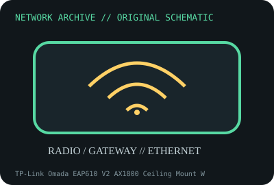

[ MODEL-SPECIFIC NETWORK HARDWARE ]
TP-Link Omada EAP610 V2 AX1800 Ceiling Mount Wi-Fi 6 Access Point
Dual-band Wi-Fi 6 business access point with Gigabit uplink and PoE. Confirm exact product label and revision before applying specifications.

IDENTIFICATION: Confirm manufacturer PID, hardware revision, device ID or module suffix. Nominal standards/link rates are not measurements of payload performance.
Exact specifications and compatibility
| Dedicated subcategory | Network appliances: routers, access points & switches |
|---|---|
| Exact product/model | TP-Link Omada EAP610 V2 AX1800 Ceiling Mount Wi-Fi 6 Access Point |
| Bus, ports and physical interface | One Gigabit Ethernet RJ-45; IEEE 802.3at PoE or DC power as documented; ceiling/wall mounting. |
| PHY, radio or protocol | 802.11ax dual-band 2x2 radio; maximum nominal rates 1201Mb/s at 5GHz and 574Mb/s at 2.4GHz per model version specs. |
| Nominal rate (not measured) | 1.775Gb/s summed advertised PHY rates are separate-band maxima; one Gigabit Ethernet uplink bounds wired throughput. |
| Measured throughput | No measured benchmark is claimed for a physical specimen. A valid result must record host/peer, link partner, media/cable, driver/firmware, traffic pattern, test tool and duration. |
| Drivers, OS and firmware | TP-Link Omada AP firmware, standalone web UI or Omada Controller; exact hardware revision and controller compatibility must be checked. |
| Compatibility | Requires suitable 802.3at PoE switch/injector or specified DC input, Gigabit uplink and lawful regional channels. Controller-managed features require compatible Omada release. |
| Variant warning | EAP610 V2 differs from V1, V3 and EAP610-Outdoor; verify regulatory region, revision, mounting/power and firmware before adoption. |
Model and revision notes
EAP610 V2 differs from V1, V3 and EAP610-Outdoor; verify regulatory region, revision, mounting/power and firmware before adoption.
TP-Link Omada AP firmware, standalone web UI or Omada Controller; exact hardware revision and controller compatibility must be checked.
Requires suitable 802.3at PoE switch/injector or specified DC input, Gigabit uplink and lawful regional channels. Controller-managed features require compatible Omada release.
Archival, ESD and preservation notes
Record hardware version, label, MAC, firmware/controller, PoE source and mount. Remove PoE before handling; store dry and ESD protected.
Document source URL, access date, document revision and specimen label/condition. Preserve without credentials or private configuration.
Primary manufacturer and standards sources
- TP-Link EAP610 V2 product specificationsPrimary manufacturer or standards documentation; verify exact SKU and host revision.
- TP-Link EAP610 V2 support and downloadsPrimary manufacturer or standards documentation; verify exact SKU and host revision.
- IEEE 802.11 standards working groupPrimary manufacturer or standards documentation; verify exact SKU and host revision.
Manufacturer statements cover the named part or its documented product family; the exact labeled revision and vendor compatibility list take precedence.